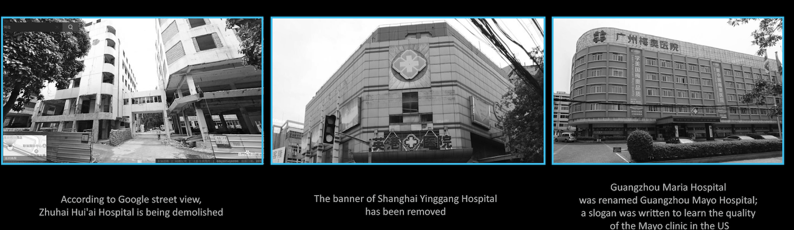

Putian is a prefecture-level city in Fujian province, located in southern China. Compared to other Chinese cities, Putian has a small population and is not a leader in development. However, Putian people are good at doing business, especially in the medical industry. At the same time, they always attach great importance to kinship relations when establishing their careers, and thus have formed a huge capital network in the medical industry. According to a previous report[1], the Putian families own over 8,600 private hospitals, accounting for more than 80% of all private hospitals in China.
Tracking Putian family
The crisis at the Putian Family started with a medical accident.
Later, a Chinese media called iFeng uncovered a list of Putian hospitals. There are 400 hospitals on this list. This list has provided a basis for us to understand the actual situation of these hospitals and the capital forces behind them. Since 2017, we have continuously tracked the relevant data and news of the Putian families, and used data analysis and visualization to unveil the mystery of the them. In our first article, we focused on their capital network in a rather broad sense, that is, what do the whole network look like macroscopically? Are there any important clusters, key nodes or salient patterns inside? In this article, we go further deeper, and mainly discuss how those big families (as well as their hospitals) evolve through all these years. In other words, how do they survive? Or why they don't.
Overall Portrait
Among the 412 hospitals, 300 can be searched on Tianyancha.com, an online business tool for Chinese companies. We then scraped all the historical information of those companies, and outline the portraits of Putian hospitals roughly using a sankey diagram. As shown below, those hospitals are both dynamic and differentiated.
From a geographical point of view, most of them are located in the southeastern China (Zhejiang, Shanghai, and Guangdong province, especially). Many years ago, Chen Deliang, the originator of Putian Medical Gang, led his students and grandchildren from Fujian to Guangdong, Shandong, Henan, Beijing, Inner Mongolia, and Heilongjiang, and traveled all over the country. After the inspection of the original capital, the Putian hospital showed Significant regional characteristics, from the early establishment of bases in the north, are turning to the more economically active southern regions.
To survive or to die, that is a question. The "evolution" stories of Putian families are full of fascination: some extend their business aggressively, some chase for technology and innovation; some families merge together, some families are torn apart; some hospitals were eliminated by market competition, while some became winners under the law of the jungle. In this game of money, the capital is always surging under the shadows.
Capital Network of 3 Families
Years ago, we have done a report about Putian network. Results show that 3 families are especially strong in the whole network, i.e., Family Zhan, Family Lin and Family Chen. Years later, how do they perform?

Zhan Guotuan was one of the eight apprentices who first followed Chen Deliang to go out and have the most business savvy, and put the Putian medical model to the extreme. He was the first person in the industry to do TV commercials, and first cooperated with public hospitals to contract departments to get rid of the image of "traveling doctor" and become the "big brother" in Putian Medical Network.
There are inextricable links between the members of the Zhan family and the cause. The core members are Zhan Yupeng, Zhan Guotuan, Zhan Guoying, Zhan Guolian, and Zhan Yangbin. Among them, Zhan Guotuan, Zhan Guoying, Zhan Guolian are brothers, and Zhan Yangbin is a cousin Zhan Yupeng is the uncle of Zhan Guotuan.
After being spotted by Wang Hai, the "China's first person to crack down on fakes" in 1998, the health management department began to clean up a large number of travel doctors. The Zhan family represented by the Zhan Guotuan was heavily attacked by public opinion. The strength of the Zhan family in Putian Youyi had to converge. In this silence, Zhan Guotuan left Singapore and set up Singapore Zhongyu Medical Group and Singapore International Medical Industry Management Group Co., Ltd. to eliminate the original sin with new foreign clothes.
In 2001, Zhan Guotuan reorganized and established Shanghai Huaheng Investment (Group) Co., Ltd., with three major institutions: Shanghai Hengyu Industrial Co., Ltd., Shanghai Xinzhong Advertising Co., Ltd. and Zhejiang Xin'an International Hospital Co., Ltd. The Zhan Guotuan family has consciously weakened its investment in hospitals. In terms of investment relations, it is difficult to see other hospital series directly related to it except Xinan International Hospital.
xxxxxxx
Unlike his cousin Zhan Guotuan, Zhan Yangbin continued to make efforts in the medical industry, shifting from traditional STD hospitals focusing on sexually transmitted diseases and infertility to higher levels of "gold content" such as brain and ophthalmology. There are roughly two ways to go ashore. People's physical examination and "blue series", "blue series" are blue hospitals that start with "blue", such as blue health brain, blue shield brain, and blue cross.
In 2005, Zhan Yangbin established the Beijing People's Hospital Investment Company, and later set up a number of medical examination institutions in Tianjin, Zhengzhou, and Chongqing, with Beijing as the center. In the process, external capital forces are gradually infiltrating. Investment bosses He Boquan, Zhang Ligang, Yunfeng Investment, Alibaba Ventures, and Aikang Guobin's health checkups have become the largest shareholders of Beijing's medical checkup clinic.
Following the medical examination industry, Zhan Yangbin started to work in the direction of brain science, linking deeper with external capital. From the perspective of equity, Zhan Yangbin is more like a follower than a leader. He is closely connected with the New Hope Liu Yonghao family and connects with Zhuo Liqiang. He indirectly holds blue shields and blue crosses through Shanghai Lansheng Brain Hospital , Blue Health, Blue Stone and other medical resources, and most of these hospitals were established after 2018.
In addition, Zhan Yangbin also invested in Beijing Yeshang Golf Club, Shanghai Hehui Investment Management Co., Ltd. and Medical Credit Financial Information Services (Shanghai) Co., Ltd. The former two are the connection points between the kinsmen of the Putian family, and the medical letter as a medical loan is a new attempt by Zhan Yangbin in the capital market after the rise of P2P.
His uncle, Zhan Yupeng, also acquired Singaporean citizenship and formed Singapore's Zhongjun Medical Group. Its Kun Ru Mary series had planned to go public in 2012 and has entered the stage of listing counseling, but has since returned to silence.

The representative figures of the Lin family in Putian are Lin Zhizhong and Lin Yuming.
In the Putian generation, Lin Zhizhong realized the malpractices of the old model earlier, and successfully transformed, forming two major medical patterns of "fraternity-benevolence" and "big-day-big", which have been gradually transferred to the children and are being realized between generations inherited. His brother Lin Zhicheng set up Tianzhi Group with Guangzhou as its base camp, with dozens of private hospitals under his control. The number is not large, but the scale is large.
In terms of seniority, Lin Yuming is a junior in the Putian Department of Hospitals, and even Lin Yuming said that he belongs to the second generation of the Putian Department. However, the rising star, the founder of the Bosheng Group, claims to be a company in Putian's medical care to try a brand chain business; the famous representative show is the Shanxi Modern Women's Hospital, within five years, the scale has expanded to municipalities and capital cities. Hemei Medical, which it established, entered the Hong Kong main board market in July 2015.
Just as this "dark horse" swelled all the way, Shenzhen and the United States Women's and Pediatric Hospital under Hemei Medical, at the end of 2018, were involved in the "gene-edited baby" case. On December 30, 2019, the "gene-edited baby" case was sentenced in the first instance of the Shenzhen Nanshan District Court. He Jiankui, Zhang Renli, Qin Jinzhou and others were convicted of illegal medical practice for illegally carrying out human embryo gene editing and reproductive medical activities for reproductive purposes.
The days of Hemei Medical also seem to be difficult. Before the IPO, according to the prospectus, the performance growth was very rapid-"Thanks to the expansion of scale effects and the improvement of company management efficiency, the sales and management expenses of Hemei Healthcare have decreased year by year. Significant growth over the past three years. "
At the time of listing, it was said that on the first day of its international placement, it had been snapped up by four major internationally renowned investment funds. By the deadline of the public offering, Hemei Medical had obtained 7.7 times over-purchase, priced at a maximum of HK $ 7.55. However, the appearance was high, and the stock price has since fallen. By the time of trading suspension in March 2019, it had fallen to HK $ 2.04 per share.
At the same time, according to the 2018 annual report, it lost 200 million yuan. Since then, Lin Yuming has begun to "sell and sell." In April 2018, Hemei Medical sold 92% of its Shenzhen Hemei Women's and Pediatric Hospital for 63 million yuan. Three months later, Hemei Medical also said that it would transfer the entire equity of Wuhan Modern Hospital, Chongqing Wanzhou Hospital and Chongqing Metropolitan Hospital for 22 million yuan. The latest news is that Ren Jinhui, vice president and chief financial officer of Hemei Medical Group, resigned.
When Hemei Medical went public, it showed strong capital energy behind it. According to the prospectus, CDH Investment through CDH Jiangen, a wholly-owned CDH Harmony, which holds 13.66% of the listed company's equity; CCB International Medical Fund, through the parent company's wholly-owned holding company Mighty Sky 8 % Equity. Bomei Medical, the predecessor of Hemei Medical, has a more direct bond with CDH and CCB International: CDH Phase I and CDH Yuanbo hold 10.66% and 3.00% of the shares of Bosson Medical respectively, and CCB International Medical 8% of the shares. But now, Hemei is still that Hemei, but the capital is long gone.

On January 2nd, the white paper of the medical beauty industry in 2019 released by Gomei App shows that the market size of pure medical beauty in China in 2019 will reach USD 256 billion, with an average growth rate of about 30% in the past five years. It can be said that the medical beauty industry is the world of the Putian Department, and the Putian Department is dominated by the Chen family. For example, Chen Jinxiu belongs to the “Mei Lai Department”, “Hua Lai Department”, “Zhu Xin Department”, “Huan Hua Department”, Chen Guoxiong ’s “Art Galaxy”, “Media”, and Chen Jin Zhang ’s “Medicine”
Although for many years, under the management of the family, the interests of many parties have been intertwined, the Chen family has continued to plan a large territory and tried to land on the capital market again and again. Chen Jinxiu and Chen Jinzhang are in the same vein, while Chen Guoxiong is Chen Jinzhang's nephew.
Chen Guoxiong and Chen Guoxing's two brothers, Yixing, are considered to be the second largest medical beauty group in China. Yixing Medical Beauty submitted a prospectus to the Hong Kong Stock Exchange in July 2018 and tried to impact the Hong Kong stock market. "China's first chain of medical beauty institutions", but since then Yixing Medical Beauty has withdrawn its IPO application.
There is also a key figure in Yixing Medical Beauty-Lin Changqing, who is the brother-in-law / brother of the Chen brothers. The prospectus showed that before the reorganization, Chen Guoxiong, Chen Guoxing and Lin Changqing respectively held 35%, 45% and 20% of Yixing Medical Beauty; after the reorganization, the shareholding structure was more complicated, but Lin Changqing still held certain shares.
It is worth noting that Yixing Medical Beauty is deeply trapped in the infringement quagmire, which may be one of the key obstacles to its listing. The reputation problem that it is facing at all times is a sharp sword hanging on the head of a listed company. The prospectus showed that the Group had 30 medical advertising violations, 77 disputes over portrait rights, and 4 medical accidents. Tianyan's investigation revealed that Yixing Medical Beauty's institutions in various places were sued by actors Zhao Yazhi, Liu Yuxin, Jin Qiaoqiao, and Zhou Weitong for disputes over the right to portraits. Yixing Medical Beauty has also been frequently sued for abusing the portraits of others. The spending on fines and disputes in 2017 amounted to RMB 3.31 million.
One possible reason for Yixing Medical Beauty's withdrawal of the IPO may be that they have found another capital path: cooperate with uncle Chen Jinzhang and land on the science and technology board with the help of Medici.
Data show that Medici was established in February 2004 as a drug research and development outsourcing service company (CRO) with a registered capital of 46.5 million yuan. GEM listing dream. Today, we all have the same goal. On November 5, 2019, Medici landed on the science and technology board with an issue price of 41.5 yuan and an opening price of 66.66 yuan, an increase of 60.6%. The prospectus shows that Medici has a total of 13 shareholders, and the largest shareholder is Chairman Chen Jinzhang, with a shareholding of 20.91%. The second, third, and fifth largest shareholders are Chen Jianhuang, Chen Chunlai, and Chen Guoxing, and their shareholding ratios are 13.21%, 10.66%, and 7.12%, respectively. At the same time, Lin Changqing also appeared in this capital map.
From the perspective of model, Chen Jinxiu formed a chain control model represented by "Huamei / Mailai / Hualai / Zixin" throughout the country with the help of the Tomato Group and the central Meilai Medical Cosmetic Hospital as the origin. At the same time, it also invests in hospitals based on regional investment management companies (Guangzhou Meilai, Fujian Meilai, Xiamen Huayi Museum, Sichuan Zhongfu, Chengdu Wanyin). At present, obvious hospital clusters have been formed in Guangshen, Sichuan, Chongqing, Fujian and other places.
Interestingly, Chen Jinxiu used Shanghai Meilai Investment Management Company to achieve absolute control over Meilai Medical Aesthetic Hospital, thereby controlling other chain systems in the country. He also did not hesitate to give equity incentives, such as cooperating with Ye Zhiyang in Guangzhou Meilai and with Zhan Jiansheng In cooperation with Xiamen Huayi Museum, it seems that it must be the "Putian Family". Although there are different agents in each region, they have not really enjoyed the capital dividend. They are relatively distributed around the network and form a regional management. It can be said that the power of outsiders is used to give the same rights.
Perhaps the Putian Hospital, which was once barbaric, is trying to integrate with modern enterprise management, but the maintenance of blood and kinship is still the inherent growth motivation of this big family.
Conclusion
Life is hard
Data Source:
1. iFeng list
2. Tianyancha.com
3. Prospectus & annual business report
4. 2018 China Medical Beauty Industry White Paper
5. Photo credit:
· Google & Baidu street view
· Homepages of hospitals
· Caixin.com
6. Related reports:
·《谁在掌控中国民营医院》: http://www.bjzqw.com/lanmu/rdht/shgj/2006/1225/1196.html
·《刘永好：不急着兑现新希望的“千亿梦”，先扶女儿上马》:
https://www.huxiu.com/article/169564.html
·《和美医疗逆势操作 国内最大私立妇产医院港股上市》:
https://new.qq.com/rain/a/20150707020608
Authors
Leave anonymous